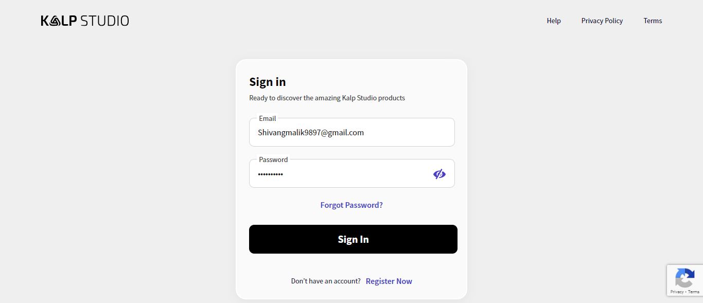

-
Appoverview page
12:29:23 pm / 00:01:48:536 Fail
Appoverview page
10.07.2024 12:29:23 pm 10.07.2024 12:31:12 pm 00:01:48:536 · #test-id=1FailVerify app registration with valid detailGiven the user navigates to login pageWhen user enters email as "Shivangmalik9897@gmail.com" and password as "Qwerty@123"And the user clicks on the Login buttonAnd user clicks on registeranapp buttonHooks.Hooks.addScreenshot(io.cucumber.java.Scenario)Verify app registration with valid detailThen user should redirect to the register an app screenStep skippedWhen user enter the all valid detailsStep skippedAnd user clicks on submit buttonStep skippedThen application should be addedStep skippedAnd user redirect to the appoverview pageStep skippedFailVerify app registration with invalid detailGiven the user navigates to login pageWhen user enters email as "Shivangmalik9897@gmail.com" and password as "Qwerty@123"And the user clicks on the Login buttonAnd user clicks on registeranapp buttonHooks.Hooks.addScreenshot(io.cucumber.java.Scenario)Verify app registration with invalid detailThen user should redirect to the register an app screenStep skippedWhen user enter the invalid detailsStep skippedThen it should display inline errorStep skippedFailVerify appoverview page contain the table of registered appGiven the user navigates to login pageWhen user enters email as "Shivangmalik9897@gmail.com" and password as "Qwerty@123"And the user clicks on the Login buttonThen user should able to see the app tableHooks.Hooks.addScreenshot(io.cucumber.java.Scenario)And table should contain the below fieldsApp ID App Name Email Country Step skippedFailVerify the pagination functionaltiyHooks.Hooks.setup()Given the user navigates to login pageStep skippedWhen user enters email as "Shivangmalik9897@gmail.com" and password as "Qwerty@123"Step skippedAnd the user clicks on the Login buttonStep skippedWhen user clicks on next page numberStep skippedThen it should redirects to the next pageStep skippedFailVerify the serach functionalityHooks.Hooks.setup()Given the user navigates to login pageStep skippedWhen user enters email as "Shivangmalik9897@gmail.com" and password as "Qwerty@123"Step skippedAnd the user clicks on the Login buttonStep skippedWhen user enter appname as "DEMO" in serach barStep skippedThen it should display the data of "DEMO" appStep skippedFailVerify the app disabled/enable buttonGiven the user navigates to login pageWhen user enters email as "Shivangmalik9897@gmail.com" and password as "Qwerty@123"Hooks.Hooks.addScreenshot(io.cucumber.java.Scenario)And the user clicks on the Login buttonStep skippedWhen user clicks on toggle button form app listStep skippedThen it should display alert realted to disable an appStep skippedWhen user clicks on disable button form alertStep skippedThen it should display app disable messageStep skippedAnd app should be disabledStep skippedWhen user clicks on toggle button form app listStep skippedThen it should display app enable messageStep skippedAnd app should be enabledStep skippedPassVerify the app disable functionalityFailVerify the app redirectionGiven the user navigates to login pageWhen user enters email as "Shivangmalik9897@gmail.com" and password as "Qwerty@123"Hooks.Hooks.addScreenshot(io.cucumber.java.Scenario)And the user clicks on the Login buttonStep skippedWhen user clicks on appname from the applistStep skippedThen it should redirects to the application home pageStep skipped
-
org.openqa.selenium.NoSuchElementException
2 tests
org.openqa.selenium.NoSuchElementException
2 failedStatus Timestamp TestName Fail 12:29:45 pm And user clicks on registeranapp button Appoverview page.Verify app registration with valid detail.And user clicks on registeranapp buttonFail 12:30:09 pm And user clicks on registeranapp button Appoverview page.Verify app registration with invalid detail.And user clicks on registeranapp button -
org.openqa.selenium.NoSuchWindowException
6 tests
org.openqa.selenium.NoSuchWindowException
6 failedStatus Timestamp TestName Fail 12:30:54 pm Hooks.Hooks.setup() Appoverview page.Verify the pagination functionaltiy.Hooks.Hooks.setup()Fail 12:30:58 pm Hooks.Hooks.setup() Appoverview page.Verify the serach functionality.Hooks.Hooks.setup()Fail 12:31:06 pm When user enters email as "Shivangmalik9897@gmail.com" and password as "Qwerty@123" Appoverview page.Verify the app disabled/enable button.When user enters email as "Shivangmalik9897@gmail.com" and password as "Qwerty@123"Fail 12:31:06 pm Hooks.Hooks.addScreenshot(io.cucumber.java.Scenario) Appoverview page.Verify the app disabled/enable button.Hooks.Hooks.addScreenshot(io.cucumber.java.Scenario)Fail 12:31:10 pm When user enters email as "Shivangmalik9897@gmail.com" and password as "Qwerty@123" Appoverview page.Verify the app redirection.When user enters email as "Shivangmalik9897@gmail.com" and password as "Qwerty@123"Fail 12:31:10 pm Hooks.Hooks.addScreenshot(io.cucumber.java.Scenario) Appoverview page.Verify the app redirection.Hooks.Hooks.addScreenshot(io.cucumber.java.Scenario) -
org.openqa.selenium.remote.UnreachableBrowserException
2 tests
org.openqa.selenium.remote.UnreachableBrowserException
2 failedStatus Timestamp TestName Fail 12:30:33 pm Then user should able to see the app table Appoverview page.Verify appoverview page contain the table of registered app.Then user should able to see the app tableFail 12:30:54 pm Hooks.Hooks.addScreenshot(io.cucumber.java.Scenario) Appoverview page.Verify appoverview page contain the table of registered app.Hooks.Hooks.addScreenshot(io.cucumber.java.Scenario)
-
@regression
8 tests
@regression
1 passed 7 failedStatus Timestamp TestName Fail 12:29:23 pm Verify app registration with valid detail Appoverview page.Verify app registration with valid detailFail 12:29:56 pm Verify app registration with invalid detail Appoverview page.Verify app registration with invalid detailFail 12:30:19 pm Verify appoverview page contain the table of registered app Appoverview page.Verify appoverview page contain the table of registered appFail 12:30:54 pm Verify the pagination functionaltiy Appoverview page.Verify the pagination functionaltiyFail 12:30:58 pm Verify the serach functionality Appoverview page.Verify the serach functionalityFail 12:31:02 pm Verify the app disabled/enable button Appoverview page.Verify the app disabled/enable buttonPass 12:31:06 pm Verify the app disable functionality Appoverview page.Verify the app disable functionalityFail 12:31:06 pm Verify the app redirection Appoverview page.Verify the app redirection
Started
Oct 7, 2024 12:29:22 pm
Ended
Oct 7, 2024 12:31:12 pm
Features Passed
0
Features Failed
1
Features
Scenarios
Steps
Timeline
Tags
| Name | Passed | Failed | Skipped | Others | Passed % |
|---|---|---|---|---|---|
| @regression | 1 | 7 | 0 | 0 | 12.5% |